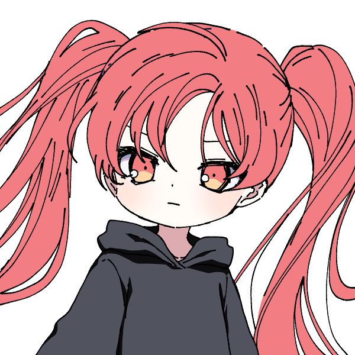

メインログ / 雑談ログ
関連作：「Counter Side」 / 「霧の狭間の罪人達」
キャラシート
PC1：胤角真環 (キャラシート) PL：ふろずんPC2：古代政宗 (キャラシート) PL：LISP
目次
■オープニングフェイズ01 運命の少女
02 鮮血の強者
■ミドルフェイズ
03 強奪作戦
04 再会
プリプレイ
GM : では自己紹介から初めて行きましょう、PC1お願いします！
■PC1：胤角真環
ロイス：さちか
カヴァー/ワークス：高校生/FHチルドレン
あなたはかつての実験が凍結される前、研究所で一人の少女と会ったことがある。
さちかという、あなたと同じように実験体にされていた少女だ。
さちかは他者に幸運をもたらす能力を持っており、その幸運の力であなたは実験の最中に助けられたことがあった。
今思えば、あなたがみゆきと出会えたのは、さちかから授けられた幸運のおかげだったのかもしれない。
しかし、さちかの方はあれからみゆきに助けられることもなく行方不明になっている。彼女は今どこにいるだろうか。
胤角 真環 :
PC1・胤角 真環(ミカド ミカン)は、デレデレツンデレFHチルドレンです🍊
FH特有の倫理観をガン無視した実験で生まれました。 HOロイスのさちかちゃんとは、そこで知り合ったカンジですね💊
マスターレイスを目標にもしてたのですが、その実験は失敗に終わってしまい、行き場を失くした時に霧下みゆきに拾われました🍈
このことをきっかけに霧下みゆきのことをスキになったらしいです。 スキになったのがみゆみゆで大丈夫？(過去の悪行を見ながら)
彼女に心酔する他のFHチルドレンたち(通称・みゆチル)よりも独占欲が強いので、玲瓏女学院での一件※は根に持ってます🍊💢
※霧下みゆきは胤角真環と同棲することになったにも関わらず、他校の寮で浮気していた。 詳細は『霧の狭間の罪人達』ログを参照。
身体的特徴としては「未成熟な身体」と「実験で移植された大きな角」が挙げられます👿
この二つについては、触れようとするとキレるので要注意ですね🍊💢
戦闘能力的には「高い攻撃力でいっぱい殴る」というシンプルなスタイルです🐺
クライマックスではヤバいバフを撒いたり撒かなかったり！ 以上！！
GM : み、みゆ…浮気…？知らんみゆね…
胤角 真環 : うそつけみか…しっかり浮気してフラれてたみかよ…🍊💢
GM : みみゆゆゆ…ちなみにこのシナリオは罪人卓が終わった直後になるのでオープニングでは回想の後に勝手に出て行ったみゆに怒るRPが出来ます
胤角 真環 : 存分にキレます💢💢💢💢💢
GM : 鎮まれ鎮まれみゆ…🍈💦
GM : 自己紹介分かりやすくて助かるね、ありがと！
GM : じゃあ次PC2いきましょ！
古代 政宗 : はいな！
■PC2：古代政宗
ロイス：晒科ザクロ（サラシナザクロ）
カヴァー/ワークス：指定無し/FHチルドレン
あなたはかつて落ちこぼれだったFHチルドレンだ。
“マスターブラッド”晒科ザクロはあなたと同じ施設で育ったチルドレンだが、今やマスターエージェントにまで登り詰めた彼女とは雲泥の差だった。
しかし現在のあなたは霧下みゆきに引き取られ、みゆきの指導で立派なエージェントとして成長した。
今では一人でもしっかりとFHの任務をこなすことが出来ている。
自身の成長を実感し始める中、みゆきからあなたに新たな指令が下されるのだった。
古代 政宗 : 「自己紹介…？ 私が、ですか…？」
古代 政宗 : 「えと…私の名前は古代政宗（コシロ・マサムネ）です。ヘンな名前ですよね…ご、ごめんなさい…」
古代 政宗 : 「組織の人からは”月下美人”とも…呼ばれてます…」
古代 政宗 : 「弱っちくてまだまだ半人前のオーヴァードですけど…今回もお役に立てるよう頑張り…ます…！」
古代 政宗 : PC2、古代政宗！ 病弱気弱チルドレンです！！！
古代 政宗 :
レネゲイドが自己破壊能力を持つ特異体質で生まれつき身体が弱く、FHの研究でなんとか生かされてきたという経歴の持ち主。
それゆえまともに能力を使うこともままならないけれど、みゆゆに指導を受けてからは弱点を克服して任務をしっかりこなせるようになりつつある感じです！
古代 政宗 : 自分のことは一人ではなにもできないグズという自己評価は変わってないので、何事にも自信がなかったりおどおどしがちだけど精一杯生きています。
古代 政宗 : 能力はブラッドボムを使った特攻型。反動はHP回復でカバーするけど出目が爆発してそのまま死亡するのはご愛敬。
古代 政宗 : みかんちゃんHP貸して！（紅のベーゼ）以上です！
GM : おどおどしてる女の子きゃわきゃわで良いぞ…
古代 政宗 : 気弱系の女子をやるのは数年ぶりのような気がする！がんばっておどおどするよ…（？）
GM : PC二人だけだから完全にHP取られるの確定してるみかんちゃん
胤角 真環 : 吸血衝動持ってるから、どちらかと言うと吸いそう側なのに；；
GM : かわいそうなみかんちゃん…
GM : りすぴっぴのこういうPC物凄く珍しいし楽しみね、紹介ありがと！
GM : じゃあオープニングから始めて行きましょう
メインプレイ
シーン1 運命の少女
GM : PC1、みかんちゃんのオープニングになります。登場侵食5点お願いします。
system : [ 胤角 真環 ] 侵蝕率 : 37 → 42
アレイスター計画 実験場
GM : これはあなたがまだアレイスター計画の実験体“被検体b-66”として扱われていた、霧下みゆきと出会う少し前の頃。
GM : 今日の戦闘実験を終え、食事を取った後に僅かに与えられた自由時間の間のことだ。
GM : あなたは疲れからか、施設の共有スペースで椅子に座ったままいつのまにか眠ってしまっていた。
GM : そろそろ自由時間は終了になる。だが、あなたを起こそうとする他の被検体は誰もいない。
GM : 被検体同士が殺し合う実験が行われるこの場所でそんな風に馴れ合う者はいなかった。
GM : ただただ無関心か、それとも時間を破って勝手に罰でも受ければいいと考えているのだろう。他の者達は次々に部屋から出ていく。
さちか : 「ねえねえ、起きて」
GM : しかし、あなたはそんな穏やかな声をかけられて目を覚ますことになった。
胤角 真環 : 「ん、あぁ……？ 」不機嫌そうによだれを拭って、目を開ける。
GM : 瞼を開けると、一人の少女があなたの前に立っていた。
GM : 緩やかにウェーブした長く白い髪が特徴的な幼い少女だった。
GM : ゆったりとした白いワンピースに身を包み、全身が白で覆われた彼女は一切の穢れがない透明感を覚えさせる。
GM : 初めて見るが、あなたと同じ被検体の一人だろう。だがその少女はどこか異様だった。
さちか : 「こんなところで寝てると、風邪ひいちゃうよ」
GM : 少女の声や雰囲気にはまるで敵意が無かったのだ。彼女は桜色の瞳であなたをただ心配そうに覘きこんでいる。
胤角 真環 : 「…………アンタには関係ないでしょ。 それとも何？ 戦闘試験の時に手を貸してほしいとかそういうの？」狙いがあるに違いない、と怪訝そうな目で見る。
さちか : 「手を貸す……？」 どういう意味か何も分かっていないようで、きょとんとしている
胤角 真環 : 「……はぁ。 いいから、そういう演技。 ここで生き残るために手を貸してほしいとかそういう話でもなければ、他のヤツに声をかける意味なんてないでしょ。」
さちか : 「……？」 首を傾げてから
さちか : 「そうかなぁ。よく分からないけど、さちかはさちかが話したい人に声かけるよ」
GM : さちか、とは彼女の名前のことなのだろう。しかし、それは被検体の番号名ではなかった。
胤角 真環 : 「はぁ？ 本気で言ってるなら呑気過ぎでしょ。そんなんでよく今まで生きてられたわね……。」
胤角 真環 : 「っていうか、何。 『さちか』って。」
さちか : 「え？ただの名前だよ。あなたにもあるでしょ？」
胤角 真環 : 「名前？ ハッ、そんなのアタシたち被検体にある訳ないでしょ。 ああ、『b-66』が名前って事になるのかしらねぇ？」鼻で笑って
胤角 真環 : 「……ああ、わかったわかった。 アンタ、外から連れてこられたクチでしょ？ ここでのルールを何にも知らないものね。」合点が言ったように
さちか : 「そう……なのかも……？」 外がどこなのか分かってないのか曖昧な様子
胤角 真環 : 「『なのかも』ってアンタね……。 あのね、元々はアンタにも家族とかいうのがいて、そいつらから貰った名前なんでしょってこと。 その『さちか』？ とかいうの。」溜息をついて
さちか : 「家族……家族っていうのは、よく分からないかも」
さちか : 「さちかって名前は、別の人から名付けてもらったんだよ」
胤角 真環 : 「ふうん……、外から攫われてきた訳じゃないのね。 じゃあ、別の人って誰よ？ 実験用のモルモットに名前なんて付けるバカがいるとは思えないけど。」
さちか : 「んー……。んーと、えーと……誰って言われると、どう言えばいいのかなぁ……」
さちか : 「お母さん……じゃないし、研究者……でもない感じがするし……」
さちか : 「何て言えばいいのか分からないけど、さちかと仲良くしてくれてた人、かなぁ……」
胤角 真環 : 「なかよくしてくれてた人、ねぇ……。 こんなところにそんなのいたとは到底思えないけど。」
胤角 真環 : 「……あのね、さちか。 アンタは状況がのみこめてないようだから、一応、教えてあげる。」
さちか : 「うん……？」
胤角 真環 : 「ここは殺し合いをする場所なの。 馴れ合いなんてしてもいずれ殺しあうことになるの。 他者と仲良くしたところで弱点になるだけ。 ……だから、アンタが話しかけてきたのは全くのムダって訳。」
胤角 真環 : 「これでアンタがどれだけバカかわかった？」
さちか : 「そうかなぁ……？さちかは別に、話しかけたいから話しかけただけだけど……」
さちか : 「あっ。でも無駄か無駄じゃないかで言うと、無駄ではないんじゃないかな？」
胤角 真環 : 「なんでそうなるの？？？？」はぁ、と肩をすくめる
さちか : 「だって、あなたに今親切に色々教えてもらえたじゃない」 嬉しそうに小さく笑って
胤角 真環 : 「……ヘンな奴。」
さちか : 「そう？さちかは普通にしてるつもりなんだけどなぁ」
胤角 真環 : 「そのフツウがここじゃヘンって話でしょ……。 まあ、いいわ。 」
胤角 真環 : 「アンタに話しかけられるのがイヤって訳でもないし、話しかけたいなら勝手に話しかければ？ 相手するかはその時の気分次第だけどね。」
さちか : 「ほんと？じゃあ、そうするっ」
胤角 真環 : 「次に話しかけてくるまでにアンタが死んでたら知らないけどね。」
さちか : 「じゃあさちか、死なないようにしなきゃね」 暢気そうに微笑みながら
胤角 真環 : 「まったくのんきね……。」フッと笑って
さちか : 「ふふっ……。あ、そうだ、もう時間だから起こさなきゃって思ってたんだ。そろそろ戻らなきゃ──」
GM : と、その時。くぅ……と、さちかの腹の音が小さく鳴った。
さちか : 「あ……」 両手でお腹を押さえてる
胤角 真環 : 「……何？ アンタ、おなか減ってんの？」
胤角 真環 : 「ま、見るからに戦闘成績悪そうだもんね。 どうせイモぐらいしか貰ってないんでしょ。」
さちか : 「うん……。ここのご飯、量少ないよね……もっとくれてもいいのにな」 しょんぼりして
胤角 真環 : 「アンタが強くなれば量も質もよくなるでしょ。 現にアタシはお腹一杯食べてるし？」
胤角 真環 : 「……ま、アンタが飢えてもアタシには関係ないハナシね。 それじゃ。」踵を返して
胤角 真環 : そのままスタスタと遠ざかっていくが、出口の扉まで歩いていったところで「はあ…。」と溜息をついて、さちかの元に戻ってくる。
さちか : 「……？忘れ物？」
胤角 真環 : 「…………。」無言でさちかちゃんの顔を見て
胤角 真環 : 「――アタシは戦闘成績優秀でお腹いっぱいだったから、これ余ったのよね。 処理しといて。」半分になった蜜柑を押し付けるように渡す
さちか : 「え？……いいの！？ありがとう！」 嬉しそうに半分の蜜柑を見て
胤角 真環 : 「……おめでたい奴ね。 残り物を捨てただけでしょ。」
さちか : 「そう？さちかは嬉しいけど……いただきますっ」
胤角 真環 : 「はいはい…。」
GM : さちかは蜜柑の実を一房口に運ぶ。
さちか : 「……！おいしい！おみかんって初めて食べたけど……久しぶりな感じがする！」
GM : そんなよく分からない感想を言いながら、美味しそうに笑顔でもぐもぐと食べ進めている。
胤角 真環 : 「初めてなのに久しぶりって、ホントにヘンな奴。」
さちか : 「ふふっ、なんでだろー……ごちそうさまでした。美味しかった！」 手を合わせて
胤角 真環 : 「そう。 それじゃ、アタシはこれで。」興味なさそうに
さちか : 「うん。……あっ、待って待って。さちかも一緒に戻るー」 あなたについていく
胤角 真環 : 「……待たない。 ついてきたいなら勝手についてきなさい。」(どうしてこんなのに蜜柑あげちゃったかな。深夜に食べようと思ってたのに…。)と思いながら、早歩きで
さちか : 「えー？んー、わかった」 小さいので歩幅が狭く、頑張って小走りでついていった
GM : ──これがさちかとの出会いだった。
GM : その後、あなたはさちかと共に過ごすことが多くなった。それはこの研究所ではありえない、友人関係に近い間柄だっただろう。
GM : だがしばらくして、今でも名乗っている胤角真環という名を一緒に考えた会話以降、あなたとさちかが顔を合わせることは無くなってしまった。
GM : 角の移植が主要な実験となり、実験体同士が接触する場がなくなってしまったのだ。
ルーム b-66
GM : そして、これはあなたが角の移植実験を受けた夜のこと。
GM : ……あなたは高熱を出して倒れてしまっていた。
GM : あなたの移植された角はジャームの力そのものと言える代物だ。角に適合しなかった実験体は非常に多く、皆ジャーム化し殺処分された。
GM : あなたは数少ない実験成功者だったが、それでも移植されたばかりの角がもたらす負担は凄まじいものだった。
GM : 角との拒絶反応のせいで暴れ狂うレネゲイドが体を蝕んでいく。
GM : この高熱はレネゲイドの暴走に体が抵抗しようとしているものなのかもしれない。
GM : だが体はだる重く、ベッドから少しも動くことが出来ない。
GM : 全身びっしょりと汗をかいて気持ちが悪い。喉はからからに乾いていて、とにかく水が飲みたかった。
GM : しかし、そんなあなたを診てくれる者は誰もいない。診たところでどうすることも出来ないのだろう。
GM : 「もしかしたら、b-66もダメだったのかもしれないな」「成功したと思ったのだがね。このままあの状態が続くようなら、処分するしかあるまい」
GM : 部屋の外から廊下を通りすがる研究者達の声が聞こえてくる。
GM : 視界は霞み、意識は朦朧としている。なのにあなたを見放すその言葉だけははっきりと聞こえていた。
胤角 真環 : 「(アタシは他の失敗作達なんかとは、ちが、う……！ アタシにはマスターの称号を得ることができる……。 アタシには価値がある……。 だから、だから……。)」
胤角 真環 : 「アタシを、捨て、ない、で……。」ぐらぐらと揺れる視界の中、なんとか立ち上がろうと体に力を入れるが、小さな声程度しか出すことができなかった。
さちか : 「捨てたりなんかしないよ」
GM : あなたのすぐ傍から、そんな優しい声が聞こえてくる。
GM : いつのまにか、ベッドの隣にさちかが立っていた。
胤角 真環 : 「ぇ……、あん、た。 なん、で……。」消え入りそうな声で言う
GM : さちかは、にこっと笑いかけて
さちか : 「さちかね、みかんちゃんに幸運を授けにきたの」
GM : そう言って、あなたの手を優しく握る。
GM : その瞬間、あなたは体を蝕む熱が消えていくのを感じる。火照った体はあっという間に冷えて、元の体温に戻っていた。
GM : 鉛のように重かった体は軽く、簡単に動かすことが出来るようになっている。
GM : 霞んでいた視界はカメラのピントが合うようにはっきりとし、微笑みかけるさちかの顔が綺麗に見えていた。
胤角 真環 : 「幸、運？ それって……。あ、あれ……？ 」尋ねようとした時には、もう声が通るようになっていて、いきなり治ったことに困惑する。
さちか : 「もう大丈夫でしょ？さちか、人を幸せにする力が使えるようになったから……」 安心したように優しく見つめて
胤角 真環 : 「う、うん。もう大丈夫、だけど……、幸せにする力って……？ 」
さちか : 「うん。さちかが今みたいにこうして触れるとね、その人は幸運になるみたいなの」
さちか : 「だから今の症状も治ったの。それにきっとこれから、みかんちゃんにはもっと良いことが起こるよ」
胤角 真環 : 「幸運と症状って関係あるのかしら……？ まあ、それはともかく、」
胤角 真環 : 「……その。 ありがと。 さちか。 ……助けてくれて。」
さちか : 「……うんっ。どういたしまして」 少し照れたように笑う
さちか : 「……っと。じゃあ、さちかもう行くね？」
胤角 真環 : 「えっ。 行く？ 何処に？ ――あ、そっか。 他の被検体の部屋に勝手に侵入するのは確かにダメね……。 」
さちか : 「それはそうなんだけど……他の人達の部屋にも行こうと思うの。さちか、ダメな子だね」
胤角 真環 : 「ああ、そういうこと……。 助けてもらった立場から言える文句なんてないわ。 そもそも、結構、アンタって勝手にしたいことするヤツでしょ。」
胤角 真環 : 「話しかけてきた時もそうだったし……。」懐かしそうに笑って
さちか : 「うん。他の人達にも幸運をあげにいかなきゃ……こんな実験で誰かがずっと苦しみ続けるなんて、さちか嫌だもん」
さちか : そうかな……？とあまり自覚の無さそうな顔をしている
胤角 真環 : 「こんな実験……。 そう、ね……。 ま、捕まらないようにうまくやりなさいよ？」
さちか : 「ありがと、気を付けるよ」
胤角 真環 : 「――アタシみたいに他の被検体たちも助けることができたなら、この実験は終わりに向かう……。 そうしたら、こうしてまた会える日も遠くなさそうね。」
胤角 真環 : 「だから、またね、さちか。 ……捕まったりしたら承知しないわよ！ 」
さちか : 「そうかも……。うん、わかった」 頷いて
さちか : 「またね、みかんちゃんっ」
GM : そう別れと再会の約束を告げる言葉と共に、笑顔を見せるさちかの姿が音もなく消えた。
GM : まるで幻だったかのように彼女の姿はもうどこにもいない。
GM : これがさちかとの最後の思い出だ。彼女はそれっきり、あなたの前に現れることは無かった。
GM : ──そして、アレイスター計画の実験凍結が発表されたのはそのすぐ翌日のことだった。
GM : 角持ちの実験体達はプライメントオーヴァードには至れないという判断が突然下された。
GM : 角付き達は確かに優秀な力を持っていたが、オーヴァードの範疇に過ぎなかったのだ。
GM : コストに対して採算が取れないことが明らかになり、長く続いた実験は凍結。あなたは研究所から解放されることになった。
GM : しかし、欲望が無いことで目標としていたマスターレイスにあなたが選ばれることもなかった。
GM : その後、何もかもを無くした空っぽのあなたが出会ったのが霧下みゆきだ。
GM : 世界を教えてくれたみゆきに憧れを抱き、その想いを告白するも彼女に届くことはなかった……。
GM : だが、今ではあなたがみゆきと同じ家に住むことが出来、それなりに幸せな日々を過ごしている。
GM : あなたとみゆきの関係はまだまだこれからだ。霧下みゆきを手にするというあなたの欲望を叶えられる時はきっといつか来るだろう。
GM : 実験が凍結され、さちかとも再会出来ず、全てを失った時は考えもしなかったことだが、
GM : 今のあなたの幸福は、本当にさちかから授けられた幸運のおかげなのかもしれない……。
GM : ……だと思っていたが、今のあなたは不幸そのものだった。
GM : 何故なら約一ヵ月前、突然みゆきが家を出ていってしまったからだ。
GM : なんでも玲瓏女学院という全寮制の学園に潜入したらしい。
GM : みゆきが勝手に潜入を決めてしまったせいで、あなたは一人取り残されて寂しい日々を送ることになってしまった。
GM : 未だにみゆきは帰ってこず、あなたは今日の放課後も一人で家路についていた……。
東雲市 住宅街
胤角 真環 : 「今日の夕ごはんはどうしようかな……。 ハンバーガーとか？ ううん、それは昨日も一昨日もたべたし……。」霧下みゆきという拠り所を失ったみかんは、それはそれは食生活が荒れに荒れていた…。
胤角 真環 : 「はあ…………。」深い深いため息をつく
GM : では、あなたが溜息をついたその時。
霧下みゆき : 「みかーんちゃん！」
GM : と、背後からあなたの名前を呼ぶみゆきの声が響く。

胤角 真環 : 「……！！ みゆっ……！！ 」ぱあっと喜んで即座に振り返る
GM : 振り返った瞬間、あなたの顔にみゆきの柔らかい胸が押し付けられた。
霧下みゆき : 「久しぶり～！元気だった？お姉ちゃんだよ～」
GM : みゆきはそう嬉しそうに言いながら、あなたを包み込むように抱きしめてくる。
胤角 真環 : 「んぅう……。」嬉しそうに抱き返すが、
胤角 真環 : その暫く後、判断能力が戻ってきた途端に、愛情が憤怒に反転。 ドンとみゆみゆをつきはなす。
胤角 真環 : 「久しぶり～！ じゃないわよッ！！ このっ……ばかぁっ！！」
霧下みゆき : 「えぇっ！？どうしたのみかんちゃん！？」
胤角 真環 : 「どうしたのでもないわっ！！ アタシを置いて勝手に出て行って！！」
霧下みゆき : 「あー……。うふふ、ごめんね？ちょっといきなりだったかしら」
胤角 真環 : 「アンタの『ごめんね』は気持ちが籠ってないのよ気持ちが！ アタシの気持ちも知らないで…！！」
霧下みゆき : 「わ、分かってるわよ～。寂しかったのよね？ほんとにごめんね？」
霧下みゆき : 「ちゃんと反省してるから！ごめんなさい、みかんちゃんっ！」 手を合わせて
胤角 真環 : 「ふうん…？ 」
胤角 真環 : 「じゃあ、あっちで浮気してたそうだけど、その件に関して弁明はある？」
霧下みゆき : 「そ、それはぁ……浮気っていうか、ただの仲間集めよー？」 えへって笑って
胤角 真環 : 「…………。」無言で睨む
霧下みゆき : 「しょうがないじゃない？ね？わたしのお仕事みたいなもんなんだしっ」
霧下みゆき : 「あっ、でもでも、もうこれからは勝手に長期間潜入するとかはしないから！ね？ね？」
胤角 真環 : 「……ホントかしら。 もう信用ならないわ。」
霧下みゆき : 「あーん、ほんとよー。信じてみかんちゃん～」
胤角 真環 : 「そう言うなら信じさせてよ、ばか。」
霧下みゆき : 「んー……あっ、じゃあこれからしばらくはお仕事抜きってことで！FHからの任務も大体他の人に回して断っちゃいましょ！」
霧下みゆき : 「寂しくさせちゃったお詫びってことで！だめかしら？一緒にたくさん遊んじゃいましょう！」 そう言ってみかんちゃんに腕を絡ませる
胤角 真環 : 「……わかった。」まだ不機嫌そうではあるが、拒否することはない
胤角 真環 : 「でも、今度また同じようなことがあったら、こっちにも考えがあるからね。」
霧下みゆき : 「分かってる分かってるわ。ありがと、みかんちゃんっ」
霧下みゆき : 「じゃあ、今日はこれからどうしようかなー……」
霧下みゆき : 「あっ、そうだ！まずはお買い物ね！みかんちゃんの好きな物いっぱい作ってあげちゃうんだから！」
GM : と、みゆきが腕を絡ませてあなたと歩いて行こうとした、その瞬間だった。
GM : あなたの腕から、みゆきの感触が消える。
GM : あなたは目撃するだろう。
GM : 突如襲い掛かってきた一条の光が、みゆきの右肩を背後から貫く瞬間を。
霧下みゆき : 「あ……っ！？」
GM : 光線に撃ち抜かれたみゆきはそのまま地面にうつ伏せに倒れる。
胤角 真環 : 「――えっ。」あまりに急なことに思考がついていかず、間の抜けた声を漏らす
胤角 真環 : 「みゆ、き……？ み、みゆきっ……！！ みゆきっ！！」次の瞬間、霧下みゆきが撃たれたのだと理解すると、血相を変えてみゆきに駆け寄る
霧下みゆき : 「……っ、う……ぅ……。だ、だいじょうぶ、よ……」 痛そうに撃たれた右肩を抑えて倒れているが、急所ではなかったため意識はある
胤角 真環 : 「……よかった、ほんとによかった。」一瞬、安堵の息を漏らして、
胤角 真環 : 「でも、いったい誰が……！ 」と周囲に敵影を探す
GM : 光線が放たれたであろう方向を探す。するとそこにいたのは黒いローブを頭から被った男だった。
GM : 男は幽霊のように地面から少し浮遊しており、ゆらゆらと左右に不安定に揺れながら
男 : 「マジカル……マジカル……」
GM : と、謎の言葉をぶつぶつと呟いていた。
胤角 真環 : 「は……？ マジカル……？ 意味分かんないけど、とりあえず同じ目には遭ってもらうからッ……！！」影を飛ばし、そのローブを攻撃する！
男 : 「マジカル……マジカル……マジカル……」 と、それしか言葉を知らないかのように繰り返した後
男 : 「マジカルうううううううう！！！！」
GM : 男は発狂したように叫びながら、あなたの操る影へと真っ向から飛んでくる！
GM : ローブの中からは獣のような爪が伸び、あなたを攻撃しようとしているようだが……！
胤角 真環 : 「(このローブ、『マジカル』とか言ってるクセに、アタシと同じキュマイラ能力者…！ 近接戦タイプなら、その影を踏んだ時点でッ…！！ )」
胤角 真環 : ローブの真下に向かった影は、ワニのアギトのようにカタチを変えると質量を持って、敵をかみ砕く。
男 : 「マッ！？」 奇妙な悲鳴を上げる
胤角 真環 : 「ふん！ そこらのキュマイラとは、リーチが違うのよリーチが！！ 」
胤角 真環 : 影鰐は標的に喰らい付くと決して離さず、ローブはその場から身動きが取れなくなった。
胤角 真環 : 「あれ……？ キュマイラ能力者なのに、さっきはエンジェルハィロゥの能力を……。 フツーにエンジェルハィロゥの能力を使っていないだけ……？」
胤角 真環 : 「まあ、いいわ。 この際だからそのローブの中身、しっかり見てやりましょ。」鰐に喰われているローブに近付いて、そのローブを引き裂いて中身を見る！
男 : 「マッ……ジ、カ……」
GM : まだ意識はあるようだが、男はもはや抵抗できない。
GM : ローブを引き裂くと、中から出て来たのは見知らぬ中年の男だった。
GM : 男の眼の焦点は合っていない。どう見ても正気では無いことは確かだ。
胤角 真環 : 「……ねえ、みゆき。 アンタ、玲瓏女学院で恨みでも買ったの？ 」みゆみゆにも心当たりはないかとその男を見せる
霧下みゆき : 「い、え……。そんな人、見覚えもないわ……」
GM : と、みゆきが答えたところで
GM : 『ピ…………ピ…………』
GM : という電子音が男から聴こえてくる。
胤角 真環 : 「……？ ……何、この音。」
GM : 『ピ…………ピ…………ピ……ピ……ピ……』
GM : 電子音の間隔は少しずつ狭まって聴こえてきていた。
霧下みゆき : 「……！？み、みかんちゃん！！そいつから離れて！！」
GM : 何かの危険を察知したのか、みゆきが慌てたように叫ぶ
胤角 真環 : 「もう、今度はなんだっていうのよっ！！」ワニを操って男を宙に放り投げる
GM : 『ピ……ピ……ピ、ピ、ピ、ピピピピピピ……』
GM : 電子音が連続してけたたましく鳴り響いた、その直後。
GM : 男の体が内部から発光し、爆発する！
GM : 耳を劈くような爆音。しかし、爆発はまだ小規模な方だった。
GM : 宙に放り投げておいたおかげであなた達まで爆風が届くことは無いだろう。
胤角 真環 : 「っ！ ああ～！ もう！！ なんなの！？ サイアク……！！」耳を抑えて
霧下みゆき : 「み、みかんちゃん……無事……？」 傷を抑えながら、心配そうに歩み寄って来る
胤角 真環 : 「アタシは無傷。 マスターの称号を得る予定のオーヴァードだもの。 ……それよりアンタでしょ、その傷はホントに大丈夫なの？ 」
霧下みゆき : 「ふふっ、流石ね」
霧下みゆき : 「わたしは……大丈夫。びっくりしちゃったけど、そこまで強い攻撃ではなかったみたいね」
GM : みゆきは肩から手をどけて見せる。撃たれて貫通していた傷口はオーヴァードの治癒能力で少しずつ治ってきていた。
胤角 真環 : 「そう。 それならよかったわ。 ……でも、あのローブは一体なんだったのかしら。」
霧下みゆき : 「そうね……」 周囲を見渡して
GM : 自爆した男は肉片の一つさえも残らず消滅してしまっている。
GM : どうやらあなた達を始末するための自爆ではなく、返り討ちに遭った時に痕跡を完全に消すためのものだったようだった。
霧下みゆき : 「駄目ね、何も残ってない。ここまで綺麗に全部吹っ飛ばせるなんて……」
霧下みゆき : 「顔は見れたけど、正直全く見覚えが無かったし……」
胤角 真環 : 「う～ん、消し飛ばすなら黒幕はバロール能力者とかかしら…。 まあ、そっちは情報全然ないし考えても仕方ないか。」
胤角 真環 : 「そういえば、あのローブはずっと『マジカルマジカル…』ってぼやいてたんだけど、そっちに心当たりはある？」
霧下みゆき : 「いいえ、それも全く。あの言葉は何だったのかしら」
胤角 真環 : 「さあ…。完全に正気じゃなかったことだけは確かなみたいだけど。」
霧下みゆき : 「その辺で勝手に発生したジャームかと思うところだけど、自爆機能がつけられていたところをみると……ジャームの手駒、かしら……」
霧下みゆき : 「何か少しでも痕跡があれば、そこから詳しく調べられそうだったのだけど」
胤角 真環 : 「消されちゃったわね。痕跡。」
霧下みゆき : 「しょうがないわね……」
GM : そんな風にあなた達が話していると、周囲から人々のざわめく声が聞こえてくる。
GM : 先程の爆発のせいで、周囲から野次馬が集まり始めていた。ワーディングもかける余裕がなかったせいだ。
GM : 今のところは全員ただの一般人のように見えるが、爆発と一緒にレネゲイドの反応を感知したUGNのオーヴァードが来るのは時間の問題かもしれない。
霧下みゆき : 「まずいわね。みかんちゃん、とりあえず離れましょう」
胤角 真環 : 「そうね、メンドくさいことになりかねないし。 UGNにアタシたちが殺したと思われたらたまんないわ。」
霧下みゆき : 「冤罪なのにね～」
胤角 真環 : 「FHでひとくくりにされるのは困るわ、ホント。 ま、痕跡自体なくなってるから、冤罪の方は大丈夫かな。」
胤角 真環 : 「それよりみゆき、これからはアタシから離れちゃダメよ。」
胤角 真環 : 「アタシなら、あの程度のジャームが束になったところで物の数じゃないし……。 アタシがアンタを守ってあげる。」
霧下みゆき : 「……！えぇ、頼りにしているわ！みかんちゃん！」 みかんちゃんの手を握る
胤角 真環 : 「……ん。」握り返し
GM : あなたはみゆきと共に、人々の間をすり抜けてその場から去っていく。
GM : UGNに見つかることもなく、一先ずは安全な場所まで避難することが出来たのだった。
東雲市 オフィス街
GM : ……そこから遥か遠く離れた、オフィス街。
GM : とあるビルの屋上に一人の少女が立っていた。

GM : 黒いゴシックドレスを身に纏ったその少女は、まるであなた達の様子を観劇するかのようにオペラグラスを覗いていた。
GM : やがて、彼女はオペラグラスを眼から外して監視をやめる。
GM : 紫色に淀んだ目は楽しそうに細め、満足するかのようににんまりと弧を描いた唇からは、
？？？ : 「……マジカルー★」
GM : という、奇妙な言葉が零れていた。
GM : シーンエンド。
GM : ではここでHOロイスの取得になります、さちかの感情の決定をお願いします。
胤角 真環 : 懐旧/不安Nで！
GM : 了解！
シーン2 鮮血の強者
GM : PC2、古代政宗のオープニングになります、登場侵食+5点お願いします。
system : [ 古代 政宗 ] 侵蝕率 : 32 → 37
FHチルドレン訓練施設
GM : これはあなたが十歳になった頃のこと。
GM : FHの研究の甲斐もあり、以前よりも体調が安定し始めたあなたはFHチルドレンとしての訓練を義務付けられることになった。
GM : しかし生まれつき体の弱いあなたがFHの過酷なトレーニングについていけるわけもなく、指導を受けてもまともに力を使いこなすことは出来なかった。
GM : いつまでも強くならないあなたを厳しく見た施設の訓練教官は、あなたの能力が一定のラインに達するまで食事を与えないことに決めた。
GM : 飢えを体感させて心身ともに追い詰めることで限界を超えさせたり、チルドレンの中に潜む欲望を見出して成長を図るFHの教育だ。
GM : しかし、食事を抜かれてもあなたのオーヴァードとしての力が向上することはなかった。
GM : 水だけは飲むことを許されているが、それでも空腹でまるで力が出ない。
GM : 飢えはあなたの体力を削っていくどころか、安定して来ていた体調を悪化させていくことになってしまっていた。
GM : 僅か二日目で、あなたはベッドから立ち上がることも出来なくなっている。
GM : 少しでも休みたいというのに空腹のせいで眠ることも出来ず、あなたは自室のベッドで一人眠れない夜を過ごしていた……。
古代 政宗 : 「んん……」空腹をごまかそうと頭まで布団をかぶっている。
古代 政宗 : 眠れずにもぞもぞと布団の中で寝返りする。息がつまりそうだ。
古代 政宗 : 「……お腹が……すきました……」
古代 政宗 : 布団をまくり上げて時計を見る。眠れないのは空腹のせいもあるが、明日が来るのが怖いのだ。
古代 政宗 : 病室にいた頃は明日を生きられることが幸せだったのに、どうして……。
古代 政宗 : 「……どうして、私はこんなに……だめなんでしょう……」
GM : あなたがそう一人で呟いた直後のこと。
？？？ : 「辛そうだな、古代」
GM : と、突然部屋の中から声がする。
古代 政宗 : 「……！？ 誰……ですか……？」
古代 政宗 : きょろきょろあたりを見回す。カギはかけたはずだが…
GM : 声がした方を見ても誰もいない。しかし、その床には赤い血だまりが広がっていた。
？？？ : 「やっぱり二日目でダウンか。まあお前の体ならよく持った方だろ」 血の中から声がする
古代 政宗 : 「ひっ……ち、血……」
GM : 血だまりが蠢き、立体的に形を変えていく。これは、体を液状化するエグザイルのエフェクトだ。
GM : やがて血の中から現れたのは、赤い髪をツインテールにした幼い少女だった。
GM : あなたはその気の強そうな顔に見覚えがある。話したことは無いが、この施設で何度も見たことがあった。
GM : 晒科ザクロ。あなたと同じ施設で育てられているFHチルドレンだった。
古代 政宗 : 「あ……あなたは……晒科……さん……」恐る恐る声を絞り出す
晒科ザクロ : 「そうだよ。ったく、勝手に部屋に入ったくらいで何びびってんだか」
GM : ザクロは適当にその辺の椅子に腰かけている。
古代 政宗 : 「ご、ごめんなさい……な、何か御用ですか……？」
晒科ザクロ : 「これ、やりにきた」
GM : ザクロはあなたに何かが入った袋を投げ渡す。
古代 政宗 : 「あっ……とっと……わっ！」落としそうになりながらキャッチするが、その勢いで転ぶ
晒科ザクロ : 「……はぁ。何やってんだよ」 呆れたように見てる
古代 政宗 : 「ご、ごめんなさい……力が出なくて……あの、これって……？」
晒科ザクロ : 「飯だよ」
GM : 袋の中を見れば、その中には施設の食事で出されるパンや、肉や魚の缶詰、林檎などの果物が入っていた。
古代 政宗 : 「わ、ほんとだ……いいんですか……？ こんなにいっぱい……」顔がぱあっと明るくなる
晒科ザクロ : 「構わねえよ。倉庫から盗んだやつだからな」
古代 政宗 : 「だ、大丈夫なんですか……それって……？」
晒科ザクロ : 「大丈夫じゃないな、ここのルール的には」
古代 政宗 : 「や、やめましょうよ……怒られちゃう……」おろおろしてる
晒科ザクロ : 「何だと？」 イラっとしたような声
古代 政宗 : 「ひっ……ごめんなさい……で、でも……」なんといったらいいかもごもごしてる
晒科ザクロ : 「お前、もしかして今自分が飯抜かれてることが正しいとでも思ってるのか？」
古代 政宗 : 「え……？」
晒科ザクロ : 「空腹で動きも出来ない位弱ってるくせに、ここから本当に強くなれるとでも思ってんのかってあたしは聞いてんだよ」
古代 政宗 : 「そ、それは……」
古代 政宗 : 「無理……だと思います……」
晒科ザクロ : 「だったら何故食わない。盗んだものだからダメだっていうのか？」
晒科ザクロ : 「どうせ元々お前に回されるはずだった分の食糧だろ、これ」
古代 政宗 : 「……」
古代 政宗 : 「そう……ですね、いただきます……」納得したような、押し負けたような微妙な表情でパンを手に取る
晒科ザクロ : 「ふん。最初から素直にそうすりゃいいんだよ」
古代 政宗 : 「ん……」パンを一口かじる。ずっとまともなものを食べていなかった身体に染み渡るようだ。
古代 政宗 : 「おいしい……です……」ゆっくりもくもく咀嚼してから、笑顔になって。
晒科ザクロ : 「そうか、よかったな」
GM : ザクロは不愛想にそう言い、適当に窓の外を見ている。食べ終わるまでここにいるつもりらしい。
古代 政宗 : 「あの……晒科さんは……どうして……助けてくれたんですか……？」
晒科ザクロ : 「気になんのか」 そちらに顔を向ける
古代 政宗 : 「はい……だって、見つかったら……晒科さんも危ないのに……」
晒科ザクロ : 「確かにそうだ。そもそも、お前が空腹だろうとあたしには関係がない」
晒科ザクロ : 「強い者は生き残り、弱い者は淘汰される。お前みたいな弱者が虐げられるのは当然の結果だし、あたしにとってもどうでもいいことだ」
晒科ザクロ : 「でもな、こんな方法がお前を強くさせるためのものだって組織がいうのはちょっと気に入らねえな」
晒科ザクロ : 「人間、腹が減ってて強くなれるわけねえだろ。何も食らわず強くなれる奴なんていねえ」
古代 政宗 : 「そう……ですね……」うんうん頷いてる
晒科ザクロ : 「だから盗んできたんだよ。気に入らねえものは気に入らねえんだからな」
古代 政宗 : 「なるほど……」納得して、深くうなずく
古代 政宗 : 「わたしも……しっかり食べて……強くなります……」
古代 政宗 : 「強く……なりたい……です」目の前のザクロのように。
GM : ザクロはその様子を見て、あなたに近付いて顔を見つめる。
晒科ザクロ : 「あぁ、そうだ。お前ももっと強くなれ、古代」
晒科ザクロ : 「あたしももっともっと、誰よりも強くなる……。強くなるためには、自分よりも強い奴を食らうのが一番だ」
晒科ザクロ : 「この礼は、お前が強くなってしっかりとあたしに返せ」
古代 政宗 : 「はい……！」珍しく力強くうなづく
晒科ザクロ : 「……それでいい」 あなたの返答に満足したように頷き返す
GM : そうした会話の後、あなたはザクロが持ってきてくれた食料を全て食べ終えた。
GM : 満腹と言えるわけではないが、エネルギーとして十分な量だ。これで今夜はもう飢えで眠れないということにはならないだろう。
晒科ザクロ : 「どうせ明日も飯抜きだろうし、またこの時間に持ってきてやるよ」
GM : ザクロはゴミを袋に片付けながらそう言う。
古代 政宗 : 「！ い……いいんですか……？」
晒科ザクロ : 「構わねえよ。そんな一日で強くなれるもんでもねえだろうしな」
晒科ザクロ : 「まあ、朝と昼はバレるだろうから我慢してもらうが」
古代 政宗 : 「はい……ありがとう……ございます……！」
GM : ザクロは口元に笑みを浮かべた後、≪鍵いらずの歩み≫を使用。
晒科ザクロ : 「じゃあな」
古代 政宗 : 「はい……おやすみなさい……！」
GM : ザクロは再び体を血液に変えて、扉の隙間から出ていった。
GM : その後も、ザクロは約束通り夜に食糧を持ってきてくれた。
GM : しかしそんな生活が一週間程経った頃、倉庫の食糧が不自然に減っていたことから、ザクロがあなたに食事を与えていたことが施設側にばれてしまった。
GM : ザクロは罰を受け、監視が強化されて一切の接触が禁じられてしまったため、彼女があなたに会いにくることはなくなった。
GM : その後もしばらくは同じ施設で育てられてはいたものの、あなた達があれから顔を合わすことはなくなっていた……。
GM : ──それから数年の月日が流れ、現在から約一年程前のこと。
GM : あなたは未だに自分の力を使いこなすことは出来ていなかった。
GM : 体の弱さは相変わらずで、一度も任務に出たことも無い。訓練教官からもほとんど見放されてしまっている状況だった。
GM : だがFHチルドレンとしていつまでもこのままではいけない。少しでも使い物にならなくては、いい加減あなたは始末されてしまうかもしれない……。
GM : そう焦るあなたは、夜中の訓練場で一人訓練に励んでいた……。
訓練場
古代 政宗 : 「はっ……！」血液を操って刃を作り、訓練用のターゲットを両断する。
古代 政宗 : これが政宗の持つブラム＝ストーカーの能力だ。威力は申し分ない……だが……
古代 政宗 : 「……ご、ほっ……！」血を使った反動で体の血管が破れ、口から血を吹き出し、そのまま床に倒れる。
古代 政宗 : 「どう……して……」赤黒い血だまりに沈みながら、何度やっても反動を抑えられない自分への焦りを口にする。
古代 政宗 : 「強く……ならなきゃ……いけないのに……」
古代 政宗 : 思い返すのは、遠い日の約束だ。それだけが、弱い彼女をずっと支えてきた。
GM : ではそこで、あなたは訓練場に鳴り響くこちらへと近づいてくる足音を聞く。
古代 政宗 : 「……？」膝で立ち上がって振り向く。
GM : そちらに目を向けると、一人の少女がこちらへと歩んでくるのが見える。

GM : 血のように赤い髪を二つに結んだ少女。その成長した姿を見るのは初めてだったが、あなたはすぐに彼女が誰か分かる。
GM : 晒科ザクロ。数年前にこの訓練施設から出ていき、今では“マスターブラッド”と呼ばれているFHチルドレンだ。
晒科ザクロ : 「随分励んでるな、古代」
GM : ザクロはあなたから少し離れた位置で立ち止まり、そう呼びかけた。
古代 政宗 : 「え……あ……っ！！」
古代 政宗 : 「晒科、さん……どうして、ここに……？」予想外のことに、気が動転している
晒科ザクロ : 「分からないのか。そりゃそうか……」
晒科ザクロ : 「古代……」
晒科ザクロ : 「あたしは、お前を殺しにきた」
古代 政宗 : 「え……！？」目を丸くする
晒科ザクロ : 「何呆けてやがる。当然だろ」
晒科ザクロ : 「FHも見込みのないチルドレンをいつまでも面倒見てあげるようなぬるい組織じゃないからな」
晒科ザクロ : 「落ちこぼれのお前を抹殺する……そういう任務があたしに回って来たってわけだ」
古代 政宗 : 「そ、そんな……！」顔が真っ青になる。
古代 政宗 : 半ば予感していたことではあるが、その任に当たるのがほかでもない彼女であることはこの上ない衝撃だった。
古代 政宗 : 今の彼女がどれほど強くなったのかは知らないが、力の差は歴然としているだろう……。
晒科ザクロ : 「どうした、信じられないか？」
古代 政宗 : 「……」何も言葉にできない。信じたくはないが、こうなるのは何もおかしいことではないのだ。
晒科ザクロ : 「…………」
晒科ザクロ : 「だけどまあ、同じ施設で育ったよしみだ。古代……殺す前にお前には一つチャンスをやるよ」
古代 政宗 : 「チャンス……それって、一体……？」
GM : ザクロは林檎を取り出して、片手で持って見せる。
晒科ザクロ : 「この林檎を食べ終わるまでの間、あたしはお前を襲わない」
晒科ザクロ : 「その間にあたしにほんの少しでも傷をつけれたら、お前のことを見逃してやる」
古代 政宗 : 「……！」
古代 政宗 : これは……チャンスだ。生きるための、そして、強くなるという約束を果たすための。
古代 政宗 : そのチャンスを、彼女はくれようとしている。
古代 政宗 : 「……本当、ですか……」
晒科ザクロ : 「なんだ、疑ってんのか」
晒科ザクロ : 「あたしはマスターエージェントだ。そのあたしに掠り傷一つでもつけれるなら、お前はまだ見込みがあるってことだろ」
晒科ザクロ : 「そんな奴を始末するのは損だからな。そういうわけだ」
古代 政宗 : 「……わかりました……晒科さん……！」覚悟を決める。やるしかない。
晒科ザクロ : ザクロは薄く笑みを浮かべ、林檎を口元に持っていく。
晒科ザクロ : 「それじゃ、スタートだ。せいぜい頑張りな」
GM : そう言って、赤い果実をそのまま齧り始めた。
古代 政宗 : 「はい……っ！」血液で刃を作る。自信はないが、やるしかない…！
古代 政宗 : 刃を手にし、ザクロへと向かって飛び掛かり、切り付ける。落ちこぼれでも、瞬発力だけならほかのオーヴァードと張り合える。
古代 政宗 : 「（最初の一撃が勝負です……お願い……！）」
古代 政宗 : 刃はリンゴを食べているザクロの眼前まで迫る！
GM : しかし、その直前であなたの視界からザクロの姿が消える。
古代 政宗 : 「――！？」
GM : 彼女はあなたを上回るオーヴァードの身体能力で攻撃を軽々と躱し、その隣まで移動していた。
晒科ザクロ : 「とろいんだよ！舐めてんのか、剣を振るならもっと速く振れ！」
GM : ザクロが怒鳴る。この間に、林檎はもう三分の一程食べ終わっていた。
古代 政宗 : 「そ、んな……は、はやい……！」
古代 政宗 : 体内から血液が昇ってくるのを感じる。でも倒れている暇はない。
古代 政宗 : 「ああ……！！」ふらつく身体を立て直して、二撃目に移る。すでに身体の限界は近い。
古代 政宗 : 必死に飛び掛かるが……やはり初撃ほどのキレはない。
晒科ザクロ : 「もっと本気で来いって言ってんだよ……！！」
GM : ──そうして、あなたは諦めずに攻撃を繰り返していく。
GM : だがしばらくして、あなたの体力が限界を迎えたと同時に、
晒科ザクロ : 「……ごちそうさまでした。……時間切れだ」
GM : ザクロは綺麗に芯だけ残した林檎を指でつまんであなたに見せる。
GM : ……結局、あなたの攻撃はザクロに一回も当たらなかった。
古代 政宗 : 「……ぐはっ」緊張の糸が切れたように、血を吐き出す。訓練でもここまで長い時間戦ったことはない。とうに限界を超えている。
晒科ザクロ : 「残念だったな、古代」 ゆっくりと近づいてくる
古代 政宗 : 「……はっ」逃げ延びようと必死に地面を這う。
晒科ザクロ : 「わりいが、チャンスはもう終わりだ」
GM : ザクロの全身が血液に変わる。液状化したザクロはあなたに飛び掛かってその四肢を絡めとり……
晒科ザクロ : 「お前を始末させて貰う」
GM : あなたの体は地面にうつ伏せに叩きつけられる。一瞬の内に実体化していたザクロに上に乗られて体を押さえつけられていた。
古代 政宗 : 「うぐっ……う、ぁ……」激痛と息苦しさにたまらずうめき声をあげる
GM : ザクロは爪で指先から切り、流れ出た血を凝固させて紅の剣を作り出す。
晒科ザクロ : 「…………」 赤い目を細め、呻き声をあげるあなたをしばらく見降ろした後
GM : ザクロが赤い剣を振りかぶる──その時だった。
GM : 突然、あなた達の周囲に白い霧が立ち込める。
古代 政宗 : 「……！？」
晒科ザクロ : 「何……！？なんだ、この霧……」
GM : あなたの上からザクロの重みが無くなる。
晒科ザクロ : 「くそっ……古代、一体これは……！！」
古代 政宗 : 「え……し、知らないです……私は……！？」
GM : ザクロの姿が白い霧の中に消えていく。
GM : すぐ真上にいたはずの彼女はどこかへと引っ張られるようにして見えなくなり、声は遠ざかっていった。
古代 政宗 : 「き……消えた……晒科さんが……？」何が起こったのかわからず同様して、あたりを見回す
霧下みゆき : 「大丈夫よ、安心して。あなたとお話するために、ちょっとだけ離れてもらっただけだから」
GM : 霧に包まれた訓練場を見回していると、あなたの背後から穏やかな声がかけられる。
古代 政宗 : 「わっ、わっ……！？ だ、誰ですか……？」
GM : そこにいたのは白い髪の少女だった。彼女は優しそうにあなたに微笑みかけている。
霧下みゆき : 「わたしは“霧の魔女”、霧下みゆき。あなたを迎えに来たの」
古代 政宗 : 「“霧の……魔女”……？ わ、私に……なんの御用でしょうか……？」
霧下みゆき : 「それはね……政宗さん」
霧下みゆき : 「わたしのところへ来ない？」
古代 政宗 : 「ど、どういう……ことですか……？ あなたのところって……」
霧下みゆき : 「わたしはね、色んなオーヴァードの勧誘や保護をしているのだけど……」
霧下みゆき : 「あなたみたいに、FHから見捨てられたチルドレンの保護もしているエージェントなの」
霧下みゆき : 「あなたが望むのなら、平穏な生活をさせてあげることも出来るし……」
霧下みゆき : 「力を求めるのなら、強くなるためのトレーニングもつけてあげられるわ」
古代 政宗 : 「見捨てられた……チルドレンの……」
古代 政宗 : 「どうして、そんなことを……？」弱ければ切り捨てられる、それが当たり前だと思ってきた政宗には、あまりにも唐突すぎた。
霧下みゆき : 「どうして、って言われると……それがわたしの欲望だからよ」
古代 政宗 : 「欲望……」
霧下みゆき : 「殺されそうな子に手を差し伸べたり、自分が好きになった子を助けたり、同じオーヴァード同士仲良くなりたいと思うのはおかしいことかしら？」
古代 政宗 : 「……いえ、私には……よくわからないけど……」
古代 政宗 : 「その、とても、いいことなんだと……思います……」消え入りそうな声で
霧下みゆき : 「ほんと？」 消え入りそうな声だったのが気になったのか、心配そうに顔を覗き込む
古代 政宗 : 「あ、はい！ そう、思います……！」近づかれてびっくりしながら
古代 政宗 : 「え、えっと……助けてくれて、ありがとうございます……！ その……」少しもじもじしてから
古代 政宗 : 「私、もっと……強くなりたい……です……！」
霧下みゆき : 「そう……！」 優しく微笑んで
霧下みゆき : 「じゃあ、とりあえずわたしと一緒にここから離れましょう」
古代 政宗 : 「は、はい……！」
霧下みゆき : 「これからのこととか、あなたに詳しく説明したいしね。突然だったし、口で言ってもピンと来ないところはあったと思うし……」
霧下みゆき : 「全部ちゃんと分かってもらってから、また改めてお礼を言ってもらおうかしら？」 そう手を差し伸べる
古代 政宗 : 「は、はい……！ よろしく……お願いします……！」 手を取る
霧下みゆき : 「えぇ、よろしくね。政宗ちゃん」
古代 政宗 : 「はい……霧下さん……！」
GM : みゆきは嬉しそうにあなたと手を繋ぎ、霧の奥へと歩んでいく。
晒科ザクロ : 「…………っ！！」
GM : 霧に行く手を阻まれていたザクロは、やっとみゆきの見せていた酷い幻覚から解放された。
晒科ザクロ : 「あいつ……一体どこに……っ」
GM : 不意打ちだったとはいえ、みゆきに敗北してしまったザクロは苛立った目で誰もいなくなった訓練場を見渡していた。
GM : ──これがあなたと霧下みゆきとの出会いだった。
GM : その後、あなたはみゆきに保護されて彼女の指導を受けることになる。
GM : みゆきの指導はレネゲイドのコントロールや衝動の抑制などを重視した、どちらかというとUGNの指導方法に近いものだった。
GM : 今までのFHの訓練からは考えも出来なかったことだったが、彼女のおかげであなたは力の扱い方を習得し、身体的な弱点も克服しつつある。
GM : 最近では、簡単な任務であれば一人でもこなすことが出来るようになってきていた……。
東雲市 市街地
GM : そんなある日の夕方。あなたが街を歩いていると、突然携帯電話の音が鳴る。何かのメッセージが届いたようだった。
GM : 表示画面を見ると、メッセージはみゆきからのものだ。
GM : 少しお願いしたいことがあり、話がしたいためこれからセルのアジトでは無くみゆきが所有している別の隠れ家へと来て欲しいということだった。
GM : メッセージには隠れ家までの地図も添付されている。ここからそう遠い場所ではなさそうだった。
古代 政宗 : 「あ、みゆきさんから……」メールを見る。
古代 政宗 : 「（いつものアジトじゃなくて隠れ家……なにかあったんでしょうか……）」
古代 政宗 : いつものように慣れない手つきで短い文を打って返信し、隠れ家へ向かう。何があったのだろうか…。
GM : シーンエンド。
GM : ではHOロイスの取得になります、ザクロの感情の決定をお願いします。
古代 政宗 : そうね！ では憧憬／〇恐怖で！
GM : 了解！
シーン3 強奪作戦
GM : ここからミドルフェイズ、合流シーンになります。二人共登場侵食+5点お願いします。
system : [ 胤角 真環 ] 侵蝕率 : 42 → 47
system : [ 古代 政宗 ] 侵蝕率 : 37 → 42
GM : あれから、みゆきは何度も襲撃に遭うことになった。
GM : 敵はあの時と全く同じ、「マジカル」と訳の分からないことを繰り返す自爆ジャームだ。
GM : UGNかFHか、オーヴァードかジャームなのか。襲撃に失敗すると自爆して全ての痕跡を消すため未だ何も詳しいことは分かっていない。
GM : せいぜい分かったことといえば自爆ジャームにはシンドロームや性別等の個体差があり、
GM : 叫ぶ言葉はマジカルの他にリリカルだとかミラクルだとかマカブルだとかある程度バリエーションがあったというどうでもいいことだけだ。
GM : ただ確かであることは、みゆきはずっと何者かに狙われているという事実。
GM : 今のところは約束通り、いつも一緒にいるみかんがみゆきを守れている。
GM : しかし敵の正体に辿り着けそうにもない中、これから先も彼女を守り切れるとは必ずしも言い切れないだろう……。
GM : ……と、思いかけそうだったところだったが、毎日のように続いていた自爆ジャームの襲撃はある日を境にぱったりと止んでしまった。
GM : 何度も失敗に終わって敵は諦めてしまったのか？それとも何か他の思惑があるのか？
高等学校
GM : そうみかんちゃんが不審に思う中、帰りのHRが終わった直後のことだった。
GM : 突然、携帯電話が震えて通話の着信を訴える。表示画面にはみゆきの名前が出ていた。
胤角 真環 : 「ん、みゆきから？ 」教室から出て、人目のないところですぐに通話に出ましょ
霧下みゆき : 「みかんちゃん！電話でごめんね？今日はちょっと、大事な要件があるのっ」
胤角 真環 : 「大事な要件？ 」
霧下みゆき : 「詳しい話は別の場所でしたいのだけど……」 と、一呼吸置いて
霧下みゆき : 「さちか」
霧下みゆき : 「……って子、みかんちゃんは知ってるわよね？」
胤角 真環 : 「……っ！？ 」急に出た懐かしい響きに驚いて、スマホを落としかける
胤角 真環 : 「アタシは知ってるけど、なんで、アンタがその名前を……。」
霧下みゆき : 「それはまあ、みかんちゃんを助けにいった時からずっと気になってたから……色々とね。調べてたのよ」
胤角 真環 : 「さちかのことが気になって……？ 」
胤角 真環 : 「……あー、聞きたい事はいろいろあるけど、あんまり込み入ったことはここじゃ話せないし、言われた通りに別の場所で聞くことにするわ。 」人通りが少ない場所で通話してるとはいえ学校なので
胤角 真環 : 「で、どこに行けばいいの？」
霧下みゆき : 「ありがと、そうしてもらえると助かるわ」
霧下みゆき : 「わたしが所有してる隠れ家があるの。住所は電話を切ってから送るわ」
霧下みゆき : 「お姉ちゃんは少し準備していくことがあるから、先に行ってもらえる？」
胤角 真環 : 「ふうん、隠れ家ね……。 先に行くのはいいけど、アタシが知らないって事は、浮気に使ってる場所って訳？」
霧下みゆき : 「え～！ち、ちがうわよ～！」
胤角 真環 : 「あやし……。」
霧下みゆき : 「別にやましい場所じゃないんだから～！」
胤角 真環 : 「……まあいいわ。 問い詰めてもボロは出なそうだし、勝手に調べておくことにしましょ。」
胤角 真環 : 「じゃあ、そろそろ切るけど……みゆきも気を付けなさいよ？ 最近、マジカルジャームは見なくなったとはいえ、安心できる訳じゃないんだから。」
霧下みゆき : 「もー……。えぇ、分かってるわ。ちゃんと気を付ける」
霧下みゆき : 「ありがとう、みかんちゃん」
胤角 真環 : 「……ん。 それじゃまたね。」ありがとうって言葉に微笑んで、通話を切る
隠れ家
GM : ではみかんちゃんは学校を出て、みゆきの指定した住所へと向かう。
GM : そこは住宅街の中に建つ洋風の一軒家だった。
GM : 外観からはFHの活動拠点とは全く分からないだろう。
胤角 真環 : 「……うん。住所は合ってる、わね。フツーの家すぎて入るのが躊躇われるくらい。 ……なるほど、隠れ家にはもってこいだわ。」家の前でうなずいて
胤角 真環 : 「さて、おじゃましま～す」とガチャリとドアを開けて入ろう
GM : みかんちゃんが来ることが分かっているからか、鍵は開けられていた。
GM : 玄関に入ると、廊下のおくからメイド服姿の銀髪の女性がやってくる。

雫石真理 : 「初めまして、この家の管理をみゆき様から任されている雫石真理（シズクイシマリ）と申します」
GM : そう名乗った彼女は礼儀正しく頭を下げる。
胤角 真環 : 「……は？ 聞いてないんだけど。」影を玄関の壁に這わせて
雫石真理 : 「……？聞いていない、とは？」
胤角 真環 : 「アンタのこと。みゆきから聞いてないんだけどって言ってんの。」
胤角 真環 : 「なんでか知らないけど、アイツは狙われてる立場なのよね。 隠れ家に先に敵がいてもフシギじゃないでしょ。 アンタがホントにみゆきのメイドだってことを証明できるものとかない訳？」
雫石真理 : 「証明できるもの、ですか……」
GM : 真理は表情はあまり変わらないが困っているようだ。
雫石真理 : 「みゆき様の携帯電話の番号ならありますが。これで普段連絡を取っているということでお分かりいただけるでしょうか」
GM : そういって、携帯電話の通話履歴を見せる。
胤角 真環 : 「ふうん……。 アンタがみゆきのメイドっていうのは、どうやらホントみたい。 疑って悪かったわね。 」
胤角 真環 : 「……話は変わるんだけどさ。 アンタ、メイドとは言ってたけど、実際のところ、みゆきとどういう関係なの。」
雫石真理 : 「どういう関係……とは……？」
胤角 真環 : 「デートしたことがあるとか、キス、した、とか……。ほら、いろいろあるでしょっ……！！ 」
雫石真理 : 「キス……？」 よく分かっていないのか、不思議そうに首をこてんと小さく傾げる
胤角 真環 : 「……な、なに？ もしかして、キス知らないとか？」
雫石真理 : 「いえ、情報としては知っていますが……。何故みゆき様とキスをするのかと疑問に思いまして」
胤角 真環 : 「ふ～ん……。 なるほど、なるほどね……。」ほっと胸を撫でおろし
胤角 真環 : 「ならいいの。 わかった。 わかったわ。」
雫石真理 : 「……？」
胤角 真環 : 「は、話を戻しましょ…！ アンタ、玄関まで迎えに来たってことは、隠れ家の案内とかしにきたんじゃないの？ 」
雫石真理 : 「はい。こちらについていただけますか？」
胤角 真環 : 「ん。 」家の様子を見回しながら、ついていこう！
GM : ではみかんちゃんは真理に案内されて、客間へと向かう。
雫石真理 : 「こちらです。先にもう一人、みゆき様がお呼びになられた方がお待ちしています」
胤角 真環 : 「もう一人？ みゆきのヤツ、アタシに話してないこと多すぎじゃない？」
雫石真理 : 「そうなのですか」
胤角 真環 : 「って、アンタに言っても仕方ないか。 案内ありがと。」
雫石真理 : 「いえ。では、失礼します」
胤角 真環 : 「ん～」小さく手を振って、客間に入ろう
GM : 真理が一礼して去った後、みかんちゃんは扉を開ける。
GM : そこには今言われた通り、一人の先客がいた。
古代 政宗 : 「あ……こ、こんにちは……？」 ソファの端でちょこんと座り、湯呑でお茶を飲みながら挨拶する。
胤角 真環 : 「……誰。 ……もう、次々と知らない女が出てくるわね。」
古代 政宗 : 「あ、あの……あなたも……霧下さんの教え子なんでしょうか……？」
古代 政宗 : 初対面なのでおどおど
胤角 真環 : 「はあ？ 教え子？ そんな訳ないでしょ。 アタシは次のマスターレイスなのよ？」
古代 政宗 : 「そ、そうなんですか……！？ し、失礼しました……！」
胤角 真環 : 「いいわ。 その様子からすると、みゆきのヤツ、アンタの方にアタシのことも教えてないみたいだし。 まったく、そういう連絡はしっかりしておいてほしいものだけど……。」
古代 政宗 : 「き、霧下さんは忙しいみたいですから……えっと……」
古代 政宗 : どう話を切り出そうかもごもご
胤角 真環 : 「それじゃあ、待ってる間に自己紹介でも済ませておきましょ。」
胤角 真環 : 「アタシは "未冠の落胤"胤角 真環。 スキに呼んでくれて結構。 アンタは？」
古代 政宗 : 「あ……わ、私は……古代……政宗です……」
古代 政宗 : 「”月下美人”とも呼ばれています……胤角さんですね……よ、よろしくお願いします……！」
胤角 真環 : 「……ま、テキトーによろしく。」手をひらひら
胤角 真環 : 「……ん？ アンタ、女なのに政宗って言うの？ 結構前に戦ったUGNの男と同じ名前じゃない。」
古代 政宗 : 「あ……はい、ヘンな名前ですよね……せめて名前は強そうにって、両親が付けてくれたんですけど……」
胤角 真環 : 「ふうん……。 両親が、ね……。」両親なんていないチルドレン
古代 政宗 : 「えっと……真環……みかんさんは……かわいいお名前ですね……！」精一杯の対応
胤角 真環 : 「……そう？ かわいい？ かしら？ でもでも、結構テキトーな名前よ？ 単純に果物のみかんあげたから『みかん』って名前つけられただけだし。」とは言いつつ、嬉しそう
古代 政宗 : 「そうなんですね……でも、とってもいい名前だと思います……」
胤角 真環 : 「ん。 悪い気はしないわ。 なんだかんだで気に入ってるし……。」
胤角 真環 : 「――そういえば、アンタもメイド服着てるけど、みゆきのメイドとかなの？ 」
古代 政宗 : 「あ、いえ、そういうわけでは……ないんですけど……」
古代 政宗 : 「お掃除とか、雑用をよくするのにこの服が便利なんです……」大真面目な顔で
胤角 真環 : 「掃除？ 雑用？ アンタ、コードネーム持ってるのに戦闘するエージェントじゃないの？ 」
古代 政宗 : 「霧下さんに教えて貰ってからはそうなんですけど……以前は任務もさせてもらえないくらい……弱かったので……」
古代 政宗 : 「なので……セルの掃除とか……そういう仕事ばかりしていました……いまもこれと同じ服ばっかりもってて……」
胤角 真環 : 「ふうん、なるほどね。 どーりで名前負けした弱そうな話し方してると思ったわ。」ぽろっと本音が出てしまう
古代 政宗 : 「あ、そ、そうですよね……すみません、弱そうで……」しゅん
胤角 真環 : 「……あ。 ごめん。」
胤角 真環 : 「まあ、自信なんて力と一緒に付いてくるものだし……。 でも、もっとハキハキ話した方がいいとは思うけど。」
古代 政宗 : 「いえ、いいんです……自分でも……どうにかしたほうがいいとは……思っているので……」
胤角 真環 : 「(あー、やっちゃったわ……。 久しぶりに、マトモに話ができそうなFHの人間に会えたのに……。)」
古代 政宗 : 「あの……き、霧下さんはご一緒ではないんですね……？ 遅れてくるんでしょうか……」
胤角 真環 : 「支度があるから遅れてくるって。 来たら文句いってやりましょ。」
GM : ではそんなところで、部屋の扉が開けられる。
霧下みゆき : 「ごめんね、二人共お待たせ！」
GM : と、遅れて到着したみゆきが部屋に入ってくる。
古代 政宗 : 「あ……！ 霧下……さん……！」
胤角 真環 : 「言ってる傍から来たわね、みゆき。 他にも人がいるなら先に言っておいてよ！ 攻撃しかけたじゃない！！」
霧下みゆき : 「あぁ、ごめんなさい忘れちゃってた！」
胤角 真環 : 「まったくもー……。」
霧下みゆき : 「まあまあ、攻撃しかけただけなら大丈夫だったのよね？安心したわ」
GM : みゆきはその辺のソファに腰かける。
胤角 真環 : 「……まあ、結果的には大丈夫だったんだけど。そのあたりはアンタのメイドの冷静な対応に救われたわね。」
古代 政宗 : 「え、と……それで、今日はどういったご用件で……？」
霧下みゆき : 「そうそう。本題に移りましょう」
霧下みゆき : 「今回はね、みかんちゃんには言ったけど……さちかちゃんって子についての話なの」
古代 政宗 : 「さちか……さんですか……？ それは、どのような方で……？」
霧下みゆき : 「みかんちゃんが昔いた研究所で、実験体にされていた女の子よ」
胤角 真環 : 「……でも、どうして今になってさちかの名前が出てくるのよ？ 数人の生き残りの『角付き』にはいなかったし、音沙汰もなかったから、てっきりあの実験で死んだものだと思ってたんだけど。」
霧下みゆき : 「あの子は死んでいないわ。今も生きているのよ」
胤角 真環 : 「生きてる……？ それは確かな情報なの？ 」
古代 政宗 : 「死んだ、と思われていたけど実は生きていた……？」首を傾げる。普段は隠れている左目が半分見える。
霧下みゆき : 「もちろん本当よ。そもそも、みかんちゃんを助けた時からずっと妙だと思っていたの」
胤角 真環 : 「妙……？ 」
霧下みゆき : 「わたしはアレイスター計画の被検体のリストを手に入れていたんだけどね」
霧下みゆき : 「途中で死んだ子、最後の実験でジャーム化し処分された子、みかんちゃんのように成功して生き延びた子……」
霧下みゆき : 「リストを照らし合わせて見ても、さちかちゃんだけはどうなったのか記されていなかったし分からなかった。不自然に行方不明になっていたのよ」
古代 政宗 : 「確かに……それは不自然……ですね……」
胤角 真環 : 「はぁ…？ 行方不明？ あの実験は完全な閉鎖空間で行われてたのよ？ 行方不明になんて、なる訳ないじゃない。」
霧下みゆき : 「でも彼女だけ行方が分からなかったのは事実よ。だからこれは何かあると思って、ずっと調べていたのだけど……」
霧下みゆき : 「つい最近、さちかちゃんの居場所が判明したのよ」
胤角 真環 : 「……それって、どこなの？ 」
霧下みゆき : 「アレイスター計画とは全く別のFHの研究所よ」
胤角 真環 : 「まったく別の……。 途中で他の研究所に引き取られたってこと……？ 」
霧下みゆき : 「そういうことね。理由は何も分からなかったけど」
胤角 真環 : 「ふうん……。あの研究所にいるよりは幸運かもね。 結局、被検体のほとんどがジャームになっちゃったし。」
古代 政宗 : 「引き取られた先で何があったかは……わからないんですね……。でも、胤角さんのお友達が……無事で……よかったです……」
胤角 真環 : 「さちかの能力は幸運に関連する力のようだったし、それでそっちに引き取られたってことかもね。」
霧下みゆき : 「幸運ね……。特異な能力があったのなら、別の研究対象になってもおかしくないわね」
霧下みゆき : 「……と、それでね？わたしには実験体の子をある程度自由に引き取る権限があるから、さちかちゃんも保護するように交渉しにいったのよ」
霧下みゆき : 「でもあそこの所長さん、全然話も聞いてくれなくてね。何が何でもさちかちゃんを渡さないみたいなの」
霧下みゆき : 「だから強行手段に出ようと思って、準備を進めていたのだけど……」
胤角 真環 : 「だけど？」
霧下みゆき : 「それがつい最近、研究所で酷い爆発事故が起きたらしいのよ」
古代 政宗 : 「爆発……！？」
霧下みゆき : 「そう、爆発……。実験の途中で何かあったのかしらね」
胤角 真環 : 「……。」
霧下みゆき : 「あぁ、でもさちかちゃんは無事だったみたいよ」
霧下みゆき : 「その事故のせいで施設が全く使い物にならなくなったから、別の新しい研究所にさちかちゃんは移されるらしいのよ」
胤角 真環 : 「……そう、さちかはほかの施設に。」ほっと息をつく
古代 政宗 : 「そう、だったんですね……ひとまず……無事でよかったですが……」
霧下みゆき : 「えぇ。そして、さちかちゃんの輸送は今日行われるみたいなの」
霧下みゆき : 「今日の夜八時……さちかちゃんを運ぶ輸送車がここを通るわ」
GM : みゆきはテーブルの上に地図を広げ、さちかが現在預けられている施設と新しい研究所を繋ぐ道を赤いマジックペンでなぞって示す。
霧下みゆき : 「この輸送車を襲撃して、さちかちゃんを奪っちゃいたいの。今日はそのために、二人を呼んだのよ」
胤角 真環 : 「みゆき……。 アンタ、そういうことするから恨み買うのよ？ 」
古代 政宗 : 「しゅ、襲撃……わぁ……奪還作戦……ですね……」
霧下みゆき : 「あらあら、良いじゃない。そもそも向こうがわたしの言うこと聞かないのが悪いんだもの」 口元を手で隠しながらくすくす笑って
霧下みゆき : 「奪還作戦、強奪作戦、救出作戦……ま、どれも同じね。力づくで連れて行きましょう」
古代 政宗 : 「（敵に回したら恐ろしい方ですね……みゆきさん……）」
胤角 真環 : 「アタシとしては、奪うにも理由が欲しい訳だけど、あっちでどんな実験受けてるとか分かんないの？」
霧下みゆき : 「さあ？そこまでは分からなかったわ」
古代 政宗 : 「ん、少し気になりますね……向こうで丁重に扱われているのであれば……無理をして身柄を奪う必要は……ないと思いますし……」
古代 政宗 : 「でも……それも襲撃してみないと……何もわからない……のでしょうか」
胤角 真環 : 「ん～、確かに爆発事故ってのはアヤしいとこではあるけどね？ 言い訳っぽいカンジするし。」
霧下みゆき : 「そうね。どんな風に扱われているかは、さちかちゃんから聞いてみるしかないわ」
霧下みゆき : 「でも、みかんちゃんがこの作戦に参加する理由はあると思うわよ？」
GM : みゆきはそう言って、地図のある地点を指差して示す。
胤角 真環 : 「……？」その地点に注目しよう
GM : そこでみかんちゃんはあることに気付く。
GM : さちかが輸送される新しい研究所の場所は、みかんちゃんが以前いたアレイスター計画の実験跡地だった。
胤角 真環 : 「……えっ！？ 嘘でしょ、ここって実験場跡！？ なんで！？ 前の事件で行ったときには確かに廃墟同然だったハズでしょ！？」
霧下みゆき : 「えぇ。だけど廃墟でも解体されずにずっと残ってるしね。改装でも何でもすれば使いようはあるわ」
霧下みゆき : 「それに機材もある程度生きていたはずだし……」
霧下みゆき : 「それか、あの場所でないと出来ない実験がある、という線もあるけど……そこまでは分からなかったわ」
胤角 真環 : 「っ……、それはそうだけど……。 今度はあそこで何しようってのよ……。」
胤角 真環 : 「はぁ……、アタシにとって終わったはずのことが、今になって……。 確かに、これなら奪う理由は十分ね……。 何よ、アイツ、全然幸運じゃないみたいじゃない。」
古代 政宗 : 「……？」なんでみかんちゃんが焦ってるのかよくわからないできょとんとしてる
霧下みゆき : 「詳細は省くけど……この場所はとても非人道的な実験場だったのよ。その場所に、今さちかちゃんは連れていかれそうになってるってこと」
古代 政宗 : 「……！ そう、なんですか……！ それは、なんとかしないと……」状況を理解した！
胤角 真環 : 「……非人道的な実験なんて、FHじゃそう珍しくないことでしょうけど、アタシにとっては、とても放ってはおけないわね。」
霧下みゆき : 「よね……！じゃあ、協力してくれる？みかんちゃん」
胤角 真環 : 「……ええ。 あそこにもう一度行くなんて、気乗りはしないけどね。 」
霧下みゆき : 「ありがと！頼りにしてるわっ」
古代 政宗 : 「私も……微力ながらお力になります……！」
霧下みゆき : 「ほんと？ありがとう、政宗ちゃん！……そうだ。政宗ちゃんを呼んだのも一つ理由があるのよ」
古代 政宗 : 「？ 理由……ですか……？」
霧下みゆき : 「えぇ。この輸送車の警備にはね、“マスターブラッド”がついているのよ」
古代 政宗 : 「……！ ”マスターブラッド”って……晒科さんの……！」
古代 政宗 : どこかおどおどとしていた顔が急に険しくなる。
胤角 真環 : 「マスターエージェント……。」
霧下みゆき : 「そ。みかんちゃんは知らないわよね、この子よ」 と、隠し撮りされたザクロの写真を見せる
胤角 真環 : 「ふうん……、融通が利かなそうな女。 政宗の知り合いなの？」
霧下みゆき : 「知り合い……知り合いよね？お友達って感じではなさそうだったし」
古代 政宗 : 「はい……同じ施設で育った……チルドレン同士でした……」
胤角 真環 : 「なるほど、アタシにとってのさちかみたいなものね。」
古代 政宗 : 「弱い私は小さい頃、晒科さんによく助けられたのですが……」
古代 政宗 : 「以前再会したとき、晒科さん……”マスターブラッド”は、私を処分する任を受けたと……言っていました……」
古代 政宗 : 「そのときは……霧下さんに助けていただいたのですが……今、彼女がどうしているのかは、わからないです……」うつむきながら
胤角 真環 : 「要するに、フクザツな関係なのね。」
古代 政宗 : 「そう、ですね……割り切れない、ものがあります……」
霧下みゆき : 「懐かしいわよね。あの時の政宗ちゃんは一方的に殺されちゃいそうになってたけど……」
霧下みゆき : 「でも、今の政宗ちゃんならマスターブラッドにも勝てるとわたしは思うのよ」
古代 政宗 : 「……晒科さんに……私が……！？」信じられないといった顔
霧下みゆき : 「えぇ！」 笑顔で頷く
胤角 真環 : 「この政宗がマスターエージェントにねえ…？ 」値踏みするように見る
古代 政宗 : 「……し、信じられません……でも……霧下さんがそうおっしゃるなら……」
霧下みゆき : 「大丈夫よ、政宗ちゃん。あなたは本当に強くなったもの……自分の力を信じてあげて。ね？」
古代 政宗 : 「はい……！ 私、頑張って……みます……！」
古代 政宗 : 今度こそ、彼女との約束を果たせるかもしれない。悲しい運命なのに、どこか胸の高鳴りを感じる。
霧下みゆき : 「えぇ、頑張って政宗ちゃん！」
霧下みゆき : 「それに何も一人で挑めだなんて言わないわ。わたしもみかんちゃんもついてるんだからっ」
古代 政宗 : 「……！ はい……！」そう、今の自分は一人ではない。
胤角 真環 : 「ふふん、まあ、アタシの相手をするなら、マスターエージェントくらいじゃないとね。」
胤角 真環 : 「……でも、わざわざチルドレン一人の護衛にマスターエージェントを使うなんて、結構なことね？」
霧下みゆき : 「言われてみればそうねぇ……」
霧下みゆき : 「目立たないように運びたいみたいだから、多くの人員をつけるわけにはいかなかったみたいだけど」
古代 政宗 : 「それだけ……高く価値を見積もられている能力……なんでしょうか……」
胤角 真環 : 「ん～……。 幸運にするだけなら、オルクス能力者にそこそこいそうなものだけど……。」
霧下みゆき : 「その辺りは、実際にさちかちゃんに会って確かめてみるしかないわね」
胤角 真環 : 「そうね、考えても仕方ない。」
霧下みゆき : 「えぇ。それじゃ、シンプルだけど今回の作戦を説明するわ」
古代 政宗 : 「はい……！」
霧下みゆき : 「まず、襲撃地点はここ。研究所に着く前の市街地ね」 地図を指差して
霧下みゆき : 「この場所ならさちかちゃんを連れて逃げやすいと思うの。詳しくは実際に到着してからまた説明するわ」
胤角 真環 : 「街中ならあっちはハデに動けないし、人込みにも紛れやすいだろうしね。」
霧下みゆき : 「そうそう。入り込める路地も多いしね」
古代 政宗 : 「向こうは、目立ちたくないようですからね……なるほど……」感心
霧下みゆき : 「そして、輸送車についている警備なのだけど」
霧下みゆき : 「情報によると輸送車の運転席にはオーヴァードの運転手が一人だけ。後は車の荷台にマスターブラッドが乗り込むらしいわ」
霧下みゆき : 「運転手の方もFHのエージェントだけど、マスターブラッドに比べれば大したことないからわたしだけで何とかしようと思うの」
霧下みゆき : 「だから、二人にはマスターブラッドの撃破をお願いしたいのよ。どうかしら？」
胤角 真環 : 「OK。 別にアタシ一人でも大丈夫だろうけど、目的のために念には念をね。」
霧下みゆき : 「ふふっ……そうね」 にこにこしてる
古代 政宗 : 「……了解、です……！ よろしくお願いします……胤角さん！」
胤角 真環 : 「ええ、一応よろしく。」
霧下みゆき : 「それと、最後に。輸送車の中にはさちかちゃんがいるから、車自体を攻撃するわけにはいかないわ」
胤角 真環 : 「それでどうやって車を止めるの？ 」
霧下みゆき : 「わたしが霧を出して走行を妨害するわ。車の進行方向を思いっきり濃くしたらまず止まるでしょう」
霧下みゆき : 「それに、こちらも霧に隠れれば接近は楽になるわ」
胤角 真環 : 「なるほどね、それならいけそう。」
霧下みゆき : 「でしょ！作戦は大体こんな感じね！」
古代 政宗 : 「霧下さんの支援……心強いです……！」
霧下みゆき : 「うふふ……。じゃあ、よろしくね。二人共」
霧下みゆき : 「絶対に、さちかちゃんを連れて帰りましょう！」
古代 政宗 : 「はいっ……！」
胤角 真環 : 「ええ…！」
GM : こうして、あなた達はさちかの強奪作戦に参加することになった。
GM : 準備を整え、襲撃地点へと向かうために隠れ家を出ていく……。
GM : と、そんな感じなのですが輸送車襲撃まで時間があるので、何か調達したいものとかあれば購入判定できます。
胤角 真環 : 応急手当キット調達したさ！(今後のHP消費を見据えて)
古代 政宗 : あ！わしもわしも！
GM : 重要！どうぞ！
胤角 真環 : 1dx+7 調達の達人(1DX10+7) ＞ 4[4]+7 ＞ 11
GM : さすみか
胤角 真環 : げっとみかーん🍊
古代 政宗 : 1dx 調達とかそういうのはない(1DX10) ＞ 7[7] ＞ 7
古代 政宗 : タリン！
GM : たりんちぇ！
GM : あとはロイス取得とかは大丈夫かしら？
胤角 真環 : 政宗ちゃんに取りたいかも！
古代 政宗 : こっちもみかんちゃんに取ろうかな…！
GM : どうぞちぇ！
胤角 真環 : 庇護/不安Nで！ 実力への不安の側面が強め
system : [ 胤角 真環 ] ロイス : 3 → 4
古代 政宗 : 胤角 真環/〇連帯感/劣等感 で！
system : [ 古代 政宗 ] ロイス : 3 → 4
古代 政宗 : これから頑張って不安を払拭するぜ……
GM : 了解！じゃあシーンエンドで…！
シーン4 再会
GM : 輸送車を襲撃しにいくシーンです！二人共登場侵食+5点お願いします。
system : [ 胤角 真環 ] 侵蝕率 : 47 → 52
system : [ 古代 政宗 ] 侵蝕率 : 42 → 47
東雲市 市街地
GM : あなた達はみゆきと共に、輸送車の通るルートへとやってきた。
GM : 輸送車は市街地の真ん中を通るため、どうしてもワーディングを使う必要がある。
GM : 近辺にはUGNの支部もあるため、あまり時間をかけすぎれば警備側だけでなく察知して来たUGNからの妨害も受けるかもしれない。
GM : なので出来る限りUGN支部から離れ、かつ離脱しやすく、拠点へとすぐに戻れる地点をみゆきは選んだ。
GM : あなた達が逃走経路の確認などをしつつ道路の脇で待ち構えていると、ついにこちらへと走って来るさちかを運ぶ輸送車らしきトレーラーが見えてくる……。
霧下みゆき : 「あの車で間違いないわ。二人共、準備はいい？」
古代 政宗 : 「はい……っ！」 息をひそめている
胤角 真環 : 「当然。いつでもオッケーよ。」
GM : みゆきは二人に頷き、
霧下みゆき : 「じゃあ……行きましょう！」
GM : ≪ワーディング≫、そして≪ケミカルスモッグ≫を使用する。
GM : 非オーヴァードが気を失って倒れていく中、周囲に白い霧が立ち込めていく。
GM : 霧のせいで視界が悪くなったせいでトレーラーは進行出来ず、ブレーキがかかった。
霧下みゆき : 「これでよし。二人共、気を付けてね！」 トレーラーの前方へと駆けだし、霧の中に消えていく
胤角 真環 : 「ふっ、こっちのセリフよ！！」さちかちゃんを積んである荷台の方に向かおう
古代 政宗 : 「そちらも、お気をつけて……！」スカートの端をもって走る！
GM : ではあなた達はみゆきと別れ、荷台のあるトレーラーの後ろへと回り込む。
GM : 霧で多少見通しが悪かったが、あなた達は問題なく辿り着くことが出来る……。
GM : ……が、トレーラーに近付いた瞬間。
GM : あなた達は鋭い殺気を感じる。その直後、赤い血の弾丸が霧の中から飛んでくる！
GM : 血の弾丸はトレーラーへの接近を阻むかのように目の前の道路に飛び散り、あなた達は足を止めざるを得なくなった！
胤角 真環 : 「ふん、情報通りに来たみたいね……。」殺気を鼻で笑う
古代 政宗 : 「っ……！！」 瞬時に反応して足を止め、弾丸の跳んできたほうを向く
晒科ザクロ : 「まさかお前が来るとはな、古代」
GM : いつの間にかトレーラーの上に立っていたザクロが、あなた達を見下ろしながら言う。
晒科ザクロ : 「狙いは荷台に積まれてるガキか？」
古代 政宗 : 「はい……私も……こんなところで会うだなんて、思いもしませんでした……晒科さん……！」
古代 政宗 : 「そちらの事情は、わかりませんが……得体の知れない実験に胤角さんの友達を……巻き込むわけにはいきませんから……！」
晒科ザクロ : 「そっちのチビは知らねえ顔だな。誰だ」
胤角 真環 : 「チビとは御挨拶ね…！！ アタシは"未冠の落胤"胤角 真環。 アンタをたおして、次のマスターの称号を得る女よ…！ 覚えておきなさい！ 」指を差して
晒科ザクロ : 「ふーん……」 面白そうに薄く笑う
胤角 真環 : 「……何？ バカにしてんの？ ……そんな風に笑っていられるのも、今のうちだからっ！！」羽織っていたジャケットを脱ぎ捨て、影を展開する。
晒科ザクロ : 「あたしを倒すとか、友達だから巻き込まないとか、そんな理由で襲撃しにきたって聞いたらな」
古代 政宗 : 「何か……知っているんですか……？！」
晒科ザクロ : 「いや、知らねえよ。あたしはただ雇われただけだ」
晒科ザクロ : 「ただ、ここに積まれてるガキは随分と珍しい能力持ってるみたいだからな。お前達もその能力目当てで寄って来たのかと思っただけだ」
胤角 真環 : 「ふん、そんな奴らと一緒にしないでほしいわね。 」
古代 政宗 : 「霧下さんは……そういう目的で……この作戦を実行したわけでは、ない……と……思います……」
晒科ザクロ : 「霧下……霧下な……。まあ、理由なんざ何でもいい」
晒科ザクロ : 「護衛任務なのに何事もなくて退屈してたんだ。あっさり終わるより、お前らみたいなのがいた方が面白い」
晒科ザクロ : 「……だが。いいのか？古代。向かってくるのなら、あたしは今度こそお前を殺すぞ」
古代 政宗 : 「……かまいません……」
古代 政宗 : 「前の時とは……違います……から……！」 弱気な心を抑え、みゆきの言葉を思い出しながら
晒科ザクロ : 「…………」
晒科ザクロ : 「良いだろう。後悔すんなよ……！」
古代 政宗 : 「……っ！」一瞬その気迫にたじろぐが、引かずに踏み込む。
GM : ザクロはトレーラーの上から飛び降り、あなた達の目の前に着地。
GM : ザクロの真っ赤な瞳と目が合う──これが戦いの合図となった！
【イニシアチブ】
12 晒科ザクロ
10 古代政宗
04 胤角真環
【初期配置】
PC達---(5m)---晒科ザクロ
GM : まずはセットアップから！
胤角 真環 : ターゲットロック+攻性変色！ みかんがザクロちゃんに対する攻撃を行う時、攻撃力+34！ 更に変異暴走します！！(HP回復不可・戦闘不能で暴走解除)
system : [ 胤角 真環 ] 侵蝕率 : 52 → 59
古代 政宗 : HP貸して！《血色の花嫁》！
胤角 真環 : 渇きの主でHPコスト賄える分、リザレクトしかないみかんにHP借りない方がいいという説もある(消費する系エフェクトはHP足りないと発動すらできないため)
古代 政宗 : 確かにそうかも！ じゃあいったん引っ込めて様子見て使おうかしら…！
GM : じゃあみかんちゃんだけかな？了解！
GM : ではまず行動値12のザクロから。
GM : マイナーでブラッドアームズ（赫き猟銃+赫き鎧）を使用
GM : 射撃武器と、HP6点消費して装甲値12点の防具を作成します。
GM : ザクロの手首から溢れだした血が凝固して拳銃に変わり、点々と服に付着した血が急所を守るプロテクターになる。
GM : メジャーで血榴砲（赫き弾+滅びの一矢+血の宴+コンセントレイト）を使用、対象は範囲で二人共！
GM : 11dx+7@8 命中(11DX8+7) ＞ 10[1,2,3,3,4,5,5,5,6,9,10]+10[4,8]+10[9]+10[8]+7[7]+7 ＞ 54
GM : クリ値８なのに殺意が凄い。リアクションどうぞ！
胤角 真環 : 変異暴走なのでリアクションはできる！ 一応のガード！
古代 政宗 : ガード値とかないんでな…ドッジしましょう！
GM : どうぞ！
古代 政宗 : 3dx+1>=54(3DX10+1>=54) ＞ 8[4,5,8]+1 ＞ 9 ＞ 失敗
GM : 命中なんです、ではダメージ！
GM : 6d10+10 装甲有効ダメージ(6D10+10) ＞ 21[2,3,3,4,6,3]+10 ＞ 31
胤角 真環 : ガード値3点なので28ダメージ受けて、残りHP4！ ギリギリ耐えた！
system : [ 胤角 真環 ] HP : 32 → 4
古代 政宗 : 死んだー！！ リザレクトしませい！
古代 政宗 : 1d10(1D10) ＞ 6
system : [ 古代 政宗 ] 侵蝕率 : 47 → 53
system : [ 古代 政宗 ] HP : 28 → 6
GM : 了解！では描写
GM : 赤い銃の先からシャボン玉が膨らむようにして、野球ボールほどのサイズの血の弾丸が一発発射される。
GM : 果物のザクロの実に似た球形の弾は一直線に二人へと飛んでいき──
晒科ザクロ : 「っらぁ！！」
GM : 命中する前に、ザクロが手を握り締める動作を合図に空中で突如爆発！
GM : 赤い球は弾け飛び、中に詰まっていた更に小さな弾丸が炸裂した！
GM : ルビーのように煌く赤い弾丸が無数にばらまかれ、二人の体を撃ち抜いていく！
古代 政宗 : 「っ……は、ぅ……！！」 攻撃を受けた個所から出血し、白いエプロンが赤く染まる
古代 政宗 : 「さすが、です……でも……っ……！」 一度膝をつくが、すぐ立ち上がる。
古代 政宗 : 以前の政宗ならここで倒れていただろうが…みゆきのもとで変わった、それを見せるまでは…！
晒科ザクロ : 「へぇ……」 少し驚き、感心した風にその様子を見ている
古代 政宗 : 「……！」 負けないとばかりににらみ返す。
胤角 真環 :
即座に影のワニを盾にするが、それはあっけなく無数の弾丸に貫かれる。
……しかし、威力の減衰には成功している。 致命傷は回避できた。
自分の力はマスターエージェントにも通用するのだ、と血を流しながら笑う。
胤角 真環 : 「はっ、この程度でたおれてやるかっての！！ このところ、こっちは爆発には慣れてんのよッ！！」
晒科ザクロ : 「はっ、そうかよ！」
GM : ザクロは銃を構え直し、次の攻撃の準備に移る……。
GM : といったところで、政宗ちゃんの行動です！
古代 政宗 : いくぜ！
古代 政宗 : マイナーで《赫き剣》《スーパーランナー》 HP2点消費で武器を作ってザクロちゃんにエンゲージだ
system : [ 古代 政宗 ] HP : 6 → 4
system : [ 古代 政宗 ] 侵蝕率 : 53 → 57
古代 政宗 : メジャーで《鮮血の一撃》《渇きの主》《ブラッドボム》《コンセントレイト：ブラム＝ストーカー》！
system : [ 古代 政宗 ] 侵蝕率 : 57 → 66
GM : 命中どうぞ！
古代 政宗 : 7dx8+2 ダイス数がちょっと心もとない！！(7DX8+2) ＞ 10[1,3,5,5,6,9,9]+3[1,3]+2 ＞ 15
古代 政宗 : ぬあああ！！
GM : ちぇ…ちぇぁー！！ドッジします！！
GM : 5dx+2(5DX10+2) ＞ 10[2,6,8,9,10]+2[2]+2 ＞ 14
GM : 当たった！！
古代 政宗 : あ、あぶねー！！
GM : 当たればいいのだ当たれば、ダメージどうぞ！
古代 政宗 : 2d10+10+2d10 装甲値無視だ！(2D10+10) ＞ 4[2,2]+10+9[5,4] ＞ 23
古代 政宗 : 命中したのでまずは渇きの主によるHP回復！16点
system : [ 古代 政宗 ] HP : 4 → 18
古代 政宗 : 鮮血の一撃のぶん引いて14点回復…そしてダメージが通ったらブラッドボムの効果が発動するよ！
古代 政宗 : 4d10 ブラッドボムによる追加ダメージ！(4D10) ＞ 16[1,9,3,3] ＞ 16
古代 政宗 : 対抗種と合わせて……ＨＰが足りない！
GM : 大変すぎる…（ふらふら政宗ちゃん）
古代 政宗 : でもリザレクト1回で済むわ！振ります振ります
古代 政宗 : 1d10(1D10) ＞ 9
system : [ 古代 政宗 ] HP : 18 → 9
system : [ 古代 政宗 ] 侵蝕率 : 66 → 75
GM : 処理は以上かな？攻撃描写どうぞ！
古代 政宗 : 血を失って身体は万全ではない。まるで、みゆきと出会ったあの日と同じだ。だが……。
古代 政宗 : 「（以前は……まるで晒科さんのスピードに全然追いつけなかった、でも、今は……！）」
古代 政宗 : 被弾した箇所から流れた血液を凝固させ、剣を生み出す。それと同時に、地面を蹴って一気にザクロへと飛び掛かる！
古代 政宗 : 「せいっ……！！」
古代 政宗 : 控え目な掛け声とは裏腹に、力強い、紅い太刀筋がザクロを一閃する！ 自己破壊能力のある政宗のレネゲイドによる攻撃は、同じオーヴァードには特段大きなダメージを与える……！
晒科ザクロ : 「……っ！？何……！！」
GM : ザクロは身を翻す。が、あとほんの少しのところで躱し切れなかった。
GM : まさか斬られるとは思わなかったのか、その眼は驚愕で見開いている。
古代 政宗 : 「……っ……！」 目と目が合う。あの時とは違う。まずは一矢報いた！
晒科ザクロ : 「……。随分と、やるようになったな。古代」 傷口を抑えながら睨みつける
古代 政宗 : 「はい……約束……しましたから……！」反動で傷口から大きく出血するのを抑える。
晒科ザクロ : 「ふん……」
GM : ザクロは嬉しそうな笑みを僅かに浮かべたが、吐血し汚れた口元を手の甲で拭ってすぐに見えなくなった。